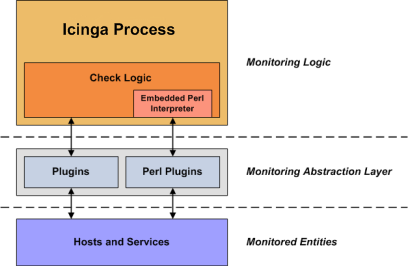

Unlike many other monitoring tools, Icinga does not include any internal mechanisms for checking the status of hosts and services on your network. Instead, Icinga relies on external programs (called plugins) to do all the dirty work.
Plugins are compiled executables or scripts (Perl scripts, shell scripts, etc.) that can be run from a command line to check the status or a host or service. Icinga uses the results from plugins to determine the current status of hosts and services on your network.
Icinga will execute a plugin whenever there is a need to check the status of a service or host. The plugin does something (notice the very general term) to perform the check and then simply returns the results to Icinga. Icinga will process the results that it receives from the plugin and take any necessary actions (running event handlers, sending out notifications, etc).

Plugins act as an abstraction layer between the monitoring logic present in the Icinga daemon and the actual services and hosts that are being monitored.
The upside of this type of plugin architecture is that you can monitor just about anything you can think of. If you can automate the process of checking something, you can monitor it with Icinga. There are already a lot of plugins that have been created in order to monitor basic resources such as processor load, disk usage, ping rates, etc. If you want to monitor something else, take a look at the documentation on writing plugins and roll your own. It's simple!
The downside to this type of plugin architecture is the fact that Icinga has absolutely no idea what it is that you're monitoring. You could be monitoring network traffic statistics, data error rates, room temperature, CPU voltage, fan speed, processor load, disk space, or the ability of your super-fantastic toaster to properly brown your bread in the morning... Icinga doesn't understand the specifics of what's being monitored - it just tracks changes in the state of those resources. Only the plugins themselves know exactly what they're monitoring and how to perform the actual checks.
There are plugins currently available to monitor many different kinds of devices and services, including:
HTTP, POP3, IMAP, FTP, SSH, DHCP
CPU Load, Disk Usage, Memory Usage, Current Users
Unix/Linux, Windows, and Netware Servers
Routers and Switches
etc.
Plugins are not distributed with Icinga, but you can download the official Nagios plugins and many additional plugins created and maintained by Nagios and Icinga users from the following locations:
Monitoring Plugins Project: https://www.monitoring-plugins.org
Monitoring Plugins Downloads Page: https://www.monitoring-plugins.org/download.html
Icinga Exchange: https://exchange.icinga.com
After downloading you have to install the plugin(s). Please check the accompanied documentation on how to do that. It may contain important information about the prerequisites like additional packages, (perl) modules and on how to install the plugin together with hints for your distribution.
Sometimes you have to compile the plugin preparing the compile process using "./configure" with or without options.
Please check the file config.log for errors regarding missing (devel) packages before issuing the actual compile
command (mostly "make" or "make all"). In most cases the plugin is copied to the plugins directory (i.e.
/usr/local/icinga/libexec) during "make install".
Sometimes you have to alter the plugin to reflect your environment (i.e. path to "utils.pm", ...). You may create a logical link pointing to the plugin directory instead so you don't have to change the plugin to circumvent this issue easing plugin updates later on doing something like
$> mkdir /usr/local/nagios $> ln -s /usr/local/icinga/libexec /usr/local/nagios/libexec
![[Note]](../images/note.png) |
Note |
|---|---|
|
Using packages the path to the plugins directory might be different (e.g. |
![[Important]](../images/important.png) |
Important |
|---|---|
|
Always execute the plugin using the Icinga user (specified using the directive icinga_user in
When testing it don't call the plugin using relative paths (i.e Please note that the Icinga user has a different environment than the Icinga
process. Using the first the logins script have been executed and there is a terminal connected to the user
session so successfully running the plugin from the command line doesn't (necessarly) mean that it will run when executed by the
process. Furthermore the process will not use a shell per default but execute calls to popen/execvp instead depending on the command
(popen in case the command line contains meta characters meaningful to the shell like
|
Switch to the Icinga user as defined in icinga.cfg unless already done and clear the
environment
#> su - icinga #> env -i
If you are logged in now then skip to "Extending the environment"
Due to security awareness of the packager / sys admin this might fail because the account is not allowed to login. Please ask your sys admin to change that temporarily or do one of the following
get the current shell from /etc/passwd and change it by issuing something similar to
#> OLD_SHELL=`grep icinga /etc/passwd | sed 's/.*://'` #> usermod -s /bin/sh icinga
execute the command(s) after switching to the Icinga user and clearing the environment as described above
don't forget to restore the shell setting after testing and leaving the session
#> usermod -s $OLD_SHELL icinga
execute the command using "sudo -u icinga"
#> sudo -u icinga /usr/local/icinga/libexec/sample-plugin.pl ...
Several checks (like check_oracle_health) depend on various environment variables to be set. Don't put these in
.bashrc or similar user dependent files but choose a central location. The default init script sources the file
/etc/sysconfig/icinga so that would be an ideal place. Don't use the init script itself because your changes might
be lost during updates.
Example of /etc/sysconfig/icinga
export ORACLE_HOME=/usr/lib/oracle/11.2/client64 export LD_LIBRARY_PATH=$ORACLE_HOME/lib export PATH=$PATH:$ORACLE_HOME
After you logged in these variables are not set but doing so is pretty easy
$> . /etc/sysconfig/icinga
Please verify the settings
$> echo $ORACLE_HOME $> echo $LD_LIBRARY_PATH $> echo $PATH
Nearly all plugins will display basic usage information when you execute them using '-h' or '--help' on
the command line. For example, if you want to know how the check_http plugin works or what options it accepts, you should try executing
the following command:
$> ./check_http --help
After the installation of the plugin (see "Obtaining plugins") call it from the command line using the appropriate options. If this works then you can integrate it into Icinga.
Let's imagine you used the following call on the command line
$> /usr/local/icinga/libexec/sample-plugin.pl -H 192.168.1.2 -a argument1 -p parameter -n 5
The command definition has to contain two directives
command_name: this is a short name identifying the command, let's use check_sample
command_line: here you define the command to execute. You can specify the command you executed on the command line but that
would be very inflexible. Normally the plugin directory (/usr/local/icinga/libexec) remains the same so we can use a $USERn$ variable which is defined in resource.cfg. The IP-address changes from
host to host. There is a macro called $HOSTADDRESS$ which we can use for that purpose.
The value of the arguments may vary so these should be flexible, too. This may lead to the following definition:
define command{
command_name check_sample
command_line $USER1$/sample-plugin.pl -H $HOSTADDRESS$ -a $ARG1$ -p $ARG2$ -n $ARG3$
}
Then we have to define the check_command directive which is part of the host/service definition starting with the short name followed by the arguments separated by exclamation marks (!):
check_command check_sample!argument1!parameter!5
As you can see the IP-address is not specified because it is taken from the host definition.
Putting it all together in reverse order shows how Icinga will process the information:
check_command check_sample!argument1!parameter!5
| | +-------------------------------------+
| +---------------------------------+ |
+---------------------------------+ | |
| | |
Host macro ----------------------------------------+ | | |
| | | |
User macro --------+ | | | |
| | | | |
command_line $USER1$/sample-plugin.pl -H $HOSTADDRESS$ -a $ARG1$ -p $ARG2$ -n $ARG3$
results in:
/usr/local/icinga/libexec/sample-plugin.pl -H 192.168.1.2 -a argument1 -p parameter -n 5
In addition to the macros already mentioned there are a lot of others making life easier. Please note:
All Icinga macros use all upper case and are enclosed in dollar signs ($)
Most macros are only valid for some types of commands. If you try to use a macro for a type of command for which it is not valid you'll get a dollar sign ($) instead of the expected value
The $USERn$ macros can be used to "hide" sensitive information like passwords because
these values are not shown in the web interface. Additionally they can be used to specify special characters which otherwise may
lead to problems. One example would be USER99=;. This way you can use a semicolon which otherwise would be
treated as start of a comment within your definitions
Native non-english speaking persons should note that $HOSTADDRESS$ is written with a double "D"
Using NRPE with arguments requires some attention. Given that you have enabled argument processing on the remote server in
nrpe.cfg using "dont_blame_nrpe=1" (or "allow_arguments=1" in nsc.ini) you can pass parameters
from the Icinga server to the remote machine. Let us assume some definitions
On the Icinga server
define command{
command_name check_nrpe
command_line $USER1$/check_nrpe -H $HOSTADDRESS$ -c $ARG1$ -a $ARG2$
}
define service{
...
check_command check_nrpe!check_process!cupsd
on the remote server in the NRPE config file
... command[check_process]=your_plugin "$ARG1$"
The Icinga process will resolve the definitions as follows
check_command check_nrpe!check_process!cupsd
| |
| +---------------------------+
+---------------------------+ |
| |
Host macro ----------------------------------+ | |
| | |
User macro --------+ | | |
| | | |
command_line $USER1$/check_nrpe -H $HOSTADDRESS$ -c $ARG1$ -a $ARG2$
results in:
/usr/local/icinga/libexec/check_nrpe -H 192.168.1.2 -c check_process -a cupsd
On the remote machine the NRPE process receives a call providing two parameters: "check_process" and "cupsd". The first is stripped to determine the command to be executed so only one argument is passed to the command!
|
Note |
|---|---|
|
$ARG1$ on the remote machine is not the same as on the Icinga server! |
The classic UI allows to inspect the raw command line including values from resource.cfg. Clicking on
"ACTIVE" next to "Check type" within host/service check details will give access to this information. If you don't have defined a check
yet choose "View Config" from the main menu on the left, then "Command expansion". Please note that the user has to be permitted
explicitly using the directive authorized_for_full_command_resolution in cgi.cfg
to see the values of variables from resource.cfg. The user running the web server must have read access on this
file, too.
If you intend to log the raw command line then change some directives in icinga.cfg to the following
values
# 16 = Host/service checks # 256 = Commands debug_level=272 debug_verbosity=2 max_debug_file_size=1000000000
Some plugins support specifying ranges for the warning and critical values. Please check the documentation if this is the case for the plugin you want to use. The following is an excerpt from the developer guidelines:
A range is defined as a start and end point (inclusive) on a numeric scale (possibly negative or positive infinity).
A threshold is a range with an alert level (either warning or critical).
The theory is that the plugin will do some sort of check which returns back a numerical value, or metric, which is then compared to the warning and critical thresholds.
This is the generalised format for ranges:
[@]start:end
Notes:
start = end if :end is not specified
start and ":" is not required if start=0
if range is of format "start:" and end is not specified, assume end is infinity
to specify negative infinity, use "~"
alert is raised if metric is outside start and end range (inclusive of endpoints)
if range starts with "@", then alert if inside this range (inclusive of endpoints)
|
Note |
|---|---|
|
Not all plugins are coded to expect ranges in this format yet. |
Example ranges
| Range definition | Generate an alert if x... |
| 10 | < 0 or > 10, (outside the range of {0 .. 10}) |
| 10: | < 10, (outside {10 .. infinity}) |
| ~:10 | > 10, (outside the range of {-infinity .. 10}) |
| 10:20 | < 10 or > 20, (outside the range of {10 .. 20}) |
| @10:20 | >= 10 and <= 20, (inside the range of {10 .. 20}) |
Command line examples
| Command line | Meaning |
| check_stuff -w10 -c20 | Critical if "stuff" is over 20, else warn if over 10 (will be critical if "stuff" is less than 0) |
| check_stuff -w~:10 -c~:20 | Same as above. Negative "stuff" is OK |
| check_stuff -w10: -c20 | Critical if "stuff" is over 20, else warn if "stuff" is below 10 (will be critical if "stuff" is less than 0) |
| check_stuff -c1: | Critical if "stuff" is less than 1 |
| check_stuff -w~:0 -c10 | Critical if "stuff" is above 10; Warn if "stuff" is above zero |
| check_stuff -c5:6 | The only noncritical range is 5:6 |
| check_stuff -c@10:20 | Critical if "stuff" is 10 to 20 [1] |
| check_stuff -w20:30 -c10:40 | Warning if "stuff" below 20 or above 30, critical if "stuff" is below 10 or above 40 [2] |
|
Note |
|---|---|
|
[1]: The command line of the developer guidelines seems to be lacking "@" otherwise the meaning would be wrong (and there wouldn't be an example for the @ notation) [2]: Please note that the last example shows nested ranges. This might not even work with every plugin supporting ranges. It was tested using check_snmp. |
Check the configuration using "/etc/init.d/icinga show-errors" and resolve any errors before issuing "/etc/init.d/icinga restart". Wait until the object is checked and look at the status details. There might be errors.
"...resulted in a return code of 127" / "out of bounds"
This means the plugin was not found at the specified location or that a file called from within the plugin was not found. If you use $USERn$ macros calling the plugin then make sure that the macro really points to the location where the plugin is (is the macro defined in resource.cfg?). Notification commands often call a mail program. Make sure that the path to the mail program is correct.
"...resulted in a return code of 126"
Mostly this indicates a permissions problem. The process might not be able to access / execute the plugin and/or other related files.
"...resulted in a return code of 13".
Mostly this indicates a permissions problem. The user might not be able to access / execute the plugin and/or other related files. This might happen if you tested a plugin as root which creates temporary files. The Icinga user is not allowed to overwrite these files.
"(null)"
The internal call to execvp didn't return anything.
You can find information on the technical aspects of plugins, as well as how to go about creating your own custom plugins here.
© 1999-2009 Ethan Galstad, 2009-2017 Icinga Development Team, https://www.icinga.com